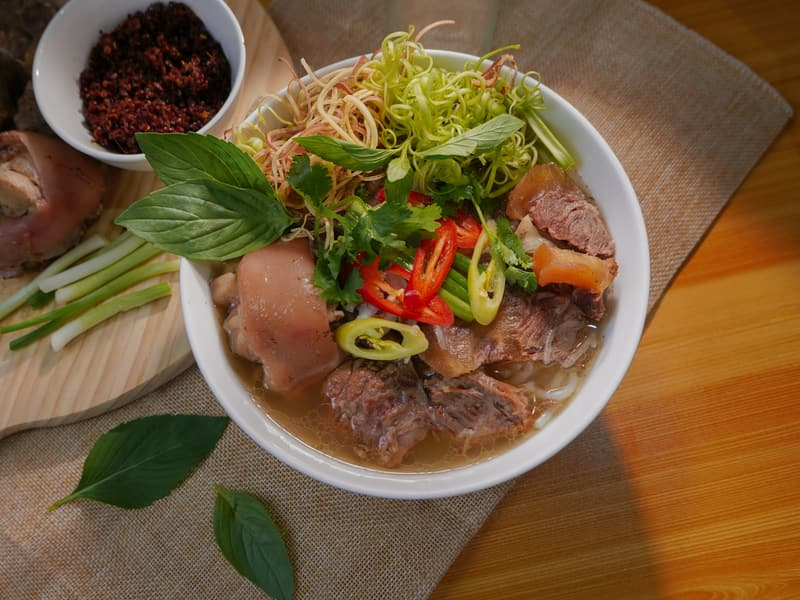

Tu wejdzie Twoje menu
Dania z nazwami, opisami i cenami — dokładnie tak, jak podajesz je w lokalu. Uzupełniamy je razem, po rozmowie.
do uzupełnieniaKuchnia tajska · Kielce
Thaikoon przy Paderewskiego 42. Gotujemy na miejscu — zjesz u nas albo zabierzesz ze sobą.



Zdjęcia ilustracyjne na wolnej licencji (Unsplash). Pełna lista autorów i źródeł: CREDITS.md.
Oferta
Pełna karta trafi tutaj po rozmowie z właścicielem. Dziś menu Thaikoon istnieje wyłącznie w aplikacjach dostawczych i na Facebooku.
Dania z nazwami, opisami i cenami — dokładnie tak, jak podajesz je w lokalu. Uzupełniamy je razem, po rozmowie.
do uzupełnieniaMiejsce na to, co zamawiają najczęściej i co sam chcesz wypychać. Wyróżnione, żeby rzucało się w oczy.
do uzupełnieniaInformacja, co da się zjeść u Ciebie, a co zabrać — oraz czy i jak dowozisz.
do uzupełnieniaTa sekcja jest celowo pusta. Menu i ceny wpisujemy dopiero po rozmowie — zmyślone dania na stronie restauracji to najszybszy sposób, żeby stracić zaufanie gościa przy pierwszym zamówieniu.
O nas

Thaikoon działa przy ulicy Paderewskiego 42 w Kielcach. 555 opinii przy ocenie 4,6 to jedna z mocniejszych pozycji wśród kieleckich restauracji.
Menu Thaikoon jest dziś dostępne tylko w Pyszne.pl i na Facebooku. Za każde zamówienie złożone przez agregator restauracja płaci prowizję.
Własna strona z kartą dań i numerem telefonu nie zastąpi agregatora, ale daje gościowi drugą drogę: zadzwonić bezpośrednio. Ta droga nie kosztuje prowizji.
Godziny otwarcia
Godziny do potwierdzenia z właścicielem — w wizytówce Google ich nie ma.
Rezerwacja stolika i zamówienia na wynos — najszybciej telefonicznie.